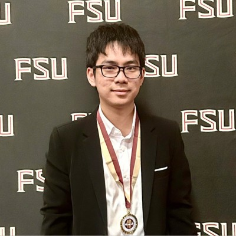

Florida State University 2026 – 2028 (expected)
M.S. in Computer Science

I am an M.S. student in Computer Science at Florida State University, where I also received my B.S. (Honors). My research interests lie in trustworthy AI: understanding how machine learning systems can be attacked, and building them to be secure, private, and efficient.
I currently work with Dr. Tuy Nguyen on privacy-preserving federated learning for healthcare. Previously, I worked with Dr. Yushun Dong on model extraction attacks against large language models and graph neural networks, and with Dr. David Whalley on compiler backend optimization.
Specifically, I work on:
Relevant coursework: Data Structures & Algorithms, Probability, Operating Systems, Data Mining.
@article{le2026encrypted,
title = {An Encrypted Dual-Attention Federated Learning Framework for
Personalized Electrocardiogram Classification},
author = {Le, Kien and Phan, Quoc Bao and Nguyen, Nhat Minh and Nguyen, Tuy Tan},
journal = {Healthcare Analytics},
volume = {10},
pages = {100482},
year = {2026},
doi = {10.1016/j.health.2026.100482}
}
@inproceedings{le2026dual,
title = {Dual Attention Heads for Personalized Federated Learning in ECG Classification},
author = {Le, Kien and Lindley, Joseph and Phan, Quoc Bao and Nguyen, Tuy Tan},
booktitle = {2026 IEEE 69th International Midwest Symposium on Circuits and Systems (MWSCAS)},
pages = {231--235},
year = {2026},
doi = {10.1109/MWSCAS67364.2026.11680976}
}
@inproceedings{li2026query,
title = {Query-Efficient Domain Knowledge Stealing Against Large Language Models},
author = {Li, Zhengao and Yuan, Xiaopeng and Shen, Bolin and Le, Kien and
Wang, Haohan and Zhou, Xugui and Gao, Shangqian and Dong, Yushun},
booktitle = {Proceedings of the AAAI Conference on Artificial Intelligence},
volume = {40},
number = {38},
pages = {31870--31878},
year = {2026},
doi = {10.1609/aaai.v40i38.40456}
}
Dual-attention transformers for personalized federated learning in ECG classification. The approach builds a dual-attention adaptor on a frozen pretrained ECG foundation model (ECGFounder) and encrypts only the globally shared parameters with CKKS homomorphic encryption. On the four-hospital FedCVD benchmark it reaches 85.8% per-client Micro-F1, 13–26 points above personalization-free baselines (including LoRA at a matched parameter budget), with a 71.5% smaller encrypted payload than encrypting the full model. A 10,000-iteration gradient-inversion attack failed to reconstruct ECG waveforms from the shared updates (Healthcare Analytics, MWSCAS 2026).
Implemented a temporal graph convolutional network (T-GCN) for anomaly detection in power grid data from the FNET/GridEye system, capturing spatial and temporal patterns in the measurements. Integrated the model into HydraGNN, ORNL's open-source distributed PyTorch framework for multi-headed graph neural networks, and trained it across multiple GPUs to scale training on large grid datasets.
Backend optimizations in the Very Portable Optimizer (VPO): copy propagation, branch chaining, and tail duplication. Analyzed how transformations affect performance and correctness across benchmarks, and debugged optimization sequences and refined transformation ordering for stable compiler behavior.
Co-designed a query-efficient attack that extracts domain knowledge from black-box LLMs with no prior domain knowledge. The method combines perplexity-guided active querying, error-feedback follow-ups from the target model, and chain-of-questions exploration. With 500 queries, a LoRA fine-tuned LLaMA-3.1 8B surrogate improved from 49.0% to 62.0% on MedQA, outperforming two baselines at the same budget (AAAI 2026).
Model extraction and ownership verification attacks on GNNs (GraphSAGE, GIN) with PyTorch Geometric.
Tutored computer science and mathematics one-on-one and in small groups, focusing on problem-solving, algorithmic thinking, and debugging.
Developed full-stack CRUD applications using Java Spring Boot, MySQL, and REST APIs, and integrated AWS deployment pipelines and JPA for data persistence.
Open-source implementation of GNNFingers, a fingerprinting framework for verifying ownership of graph neural networks, contributed with documentation to the PyGIP library for GNN security research.
A fully offline AI backpack for blind and low-vision users, running on an NVIDIA Jetson Orin Nano. YOLO obstacle tracking with time-to-collision prediction is fused with ultrasonic sensors to drive haptic alerts, and an on-device voice assistant (Whisper, Qwen3-VL-2B, Piper) answers questions about the scene with no internet. I built the detection model and quantized it with TensorRT to run in real time within the Jetson's 8 GB of shared memory.
Crowdsourced, real-time pothole detection: a phone camera streams frames to a YOLOv8 detector, and GPS-tagged reports appear on a live map that alerts drivers and lets admins verify and export data for city authorities. Built with YOLOv8 detection through Roboflow, React/TypeScript, Node.js/Express, MongoDB, Socket.io, and the Google Maps API.
Outside of research, I enjoy competitive programming and hackathons, and I like helping other students through tutoring. I am originally from Vietnam.